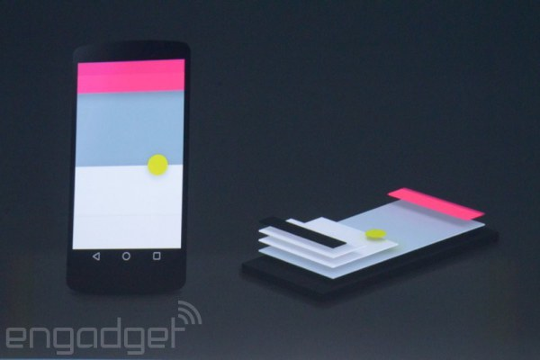
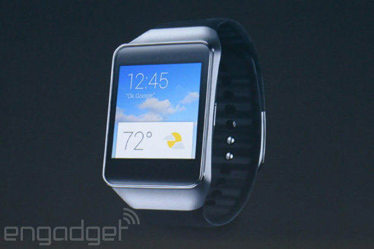
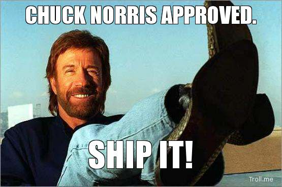
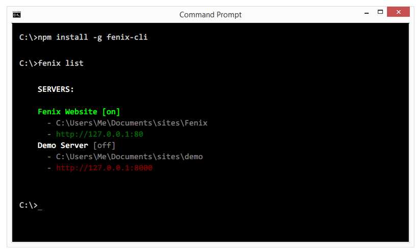

June 2014: Bleeding Edge Web
News from the Bleeding Edge
— Super Abbreviated, But Ultra Fresh
Customize Your Workflow.js
— Corey Butler (@goldglovecb)
Google I/O
- Material Design
- Polymer
- Android L & Beyond
- Android Wear
More Google
- Web Development "Starter Kit"
Material Design
- "Back to Basics"
- Like paper, but expandable
- Consistency across devices
- Has an "elevation" attribute
- Include in Polymer
- Demo

Android L
- Dramatic UI Overhaul
- Universal Syncing
- Simpler User Experience
- Available Today
- Enterprise Support (Data Separation/Samsung Knox)
Android Wear
- Syncs w/ Phone, TV, Car, etc.

Customize Your Workflow.js
Workflow:
A workflow consists of an orchestrated and repeatable pattern of business activity enabled by the systematic organization of resources into processes that transform materials, provide services, or process information.
a.k.a.
Workflow.js:
Use JavaScript to git-r-done... better.
My workflow...
Runs smooth. Stays on track. Best Ever!
Begrudgingly Enlarge Logo
Gets Worse:
- Setup Apache/IIS/NGINX
- Deploy to Test Server (assuming there is one)
- Redeploying changes = PITA
- Testing AJAX

Prototyped in 12hrs instead of 12 days.
In 6-7 Weeks...
- 400+ Tweets
- 500+ Github Stars
- 4700+ Downloads (100-200/day)
Application Components
- Desktop Shell
- Server Infrastructure
- GUI
- Installers
Pour on the JS awesome sauce!
The Good:
- Runs on Windows, OSX, & Linux
- Use HTML5/JS/CSS3 (Chrome)
- Node.js Support
- Supports Icons, System Tray, Native Menus
The Bad:
- Slow Startup (Really, But Not Really)
- No Notifications API (NOT REALLY Chrome)
- Node.js Version Lag
- Security Concerns?
- Permissions
- App Store Issues
Node-Webkit Alternatives
- Macgap
- Brackets-Shell (Adobe)
- Atom-Shell (Github)
- deskShell (formerly AppJS)
- WinJS (Microsoft)
- Qt (Nokia)
- Chrome Extensions | Apps (Google)
- CEF (Not Recommended)
Why Node-Webkit Won
- Community support & velocity (Intel Labs)
- Project maturity
- Pro features (Icons)
- Easier distribution w/ Installers
- Prior experience
- Didn't know about alternatives
Why Linux Didn't (i.e. Windows & OSX Only)
- Hard to maintain "Simple" brand
- Many flavors of Linux
- Smaller community of desktop Linux users
- Fenix does run on Linux
Node Modules
- Web Servers: send
- SSH Tunneling (Sharing): localtunnel
- Request Browser: express
- API: express
Port Detection: portscanner
- Markdown Support: marked
- NOT Using node-windows or node-mac
- ... several more
Fenix Command Line
- Delivered separately as a Node.js CLI utility
- AJAX API, not REST
- API is HTTP based: the universal language

The UI
- HTML5
- CSS3, including Flexbox
- Animate.css, Hover.css
- jQuery
- EcmaScript 5 Constructs
- Custom "Mini-MVC" & Event Bus
- No Framework
Blending GUI and server-side OOP feels strange.

Installers
- Windows: InnoSetup (Not Trivial)
- Mac: DMG/.app
- Not Required
Why?
- Easier deployment
- Faster setup, no training
- More professional
- Easier updates
Q & A
</presentation>
<BuffaloBilliards>
←
→
/
#